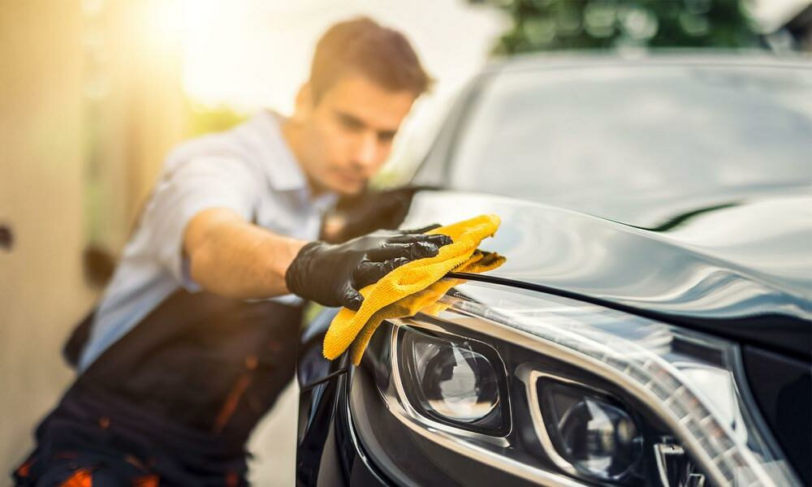

NOSOTROS
Ecohabitwash es una empresa que se enfoca en el lavado de cualquier vehículo en seco y a domicilio, usando ecotecnología de ionización que permite eliminar cualquier tipo de suciedad y dando solucion a problemas como los siguientes:
- Ahorro de agua, ya que un vehículo como el carro puede tener un gasto de entre 200 y 300 litros.
- Adiós al oxido, al no usar agua para lavar el vehículo, se evita que la pintura, la carrocería y los elementos metálicos del vehículo se oxiden.
- Comodidad, ya que el lavado se puede realizar en cualquier lugar ya sea casa o trabajo y en un rango de hora.
